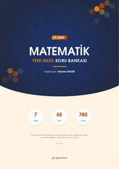
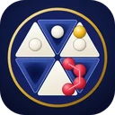

iBu görselde neler var?Cismi sürükleyerek çevirebilirsin
Onikiyüzlü ve küp
Düzgün onikiyüzlünün içine kırmızı bir küp tam olarak sığar. Öklid bunu Elemanlar'ın son kitabında gösterir.
Birim çember ve sinüs
Çemberde dönen nokta, yüksekliğini sağa taşıyarak y = sin x eğrisini kalemle çiziyormuş gibi koyulaştırır.
MEDAR
Cismin arkasındaki tahta, kenarı birim çembere oturan strateji oyunum; üçgenleri sırayla 120° döner.
Dronlar
Komşu pervaneler ters yönlere döner; böylece dönme etkileri birbirini sıfırlar ve dron kendi etrafında dönmez.
Dişliler
12 ve 8 dişli çarklar: küçüğü 1,5 kat hızlı ve ters yönde döner, çünkü kenar hızları eşittir: ω₁r₁ = ω₂r₂.
Fizik formülleri
F = m·a Newton'un ikinci yasası; T = 2π√(L/g) küçük salınımlı bir sarkacın periyodu.
Hakkımda
Matematiği yalnızca öğretilen bir ders olarak değil; araştırılan, tasarlanan ve gerçek problemlere uygulanan canlı bir alan olarak görüyorum. Yirmi yıldır matematik öğretiyorum; bunun on yedi yılı resmî öğretmenlik.
Öğrenci mentörlüğü
Yirmi yıldır YKS ve LGS'ye hazırlanan öğrencilerle hem matematikte hem geometride birebir çalışıyorum. Bu deneyimi birkaç yıl özel okullarda ve dershanelerde çalışarak pekiştirdim. Türkiye sıralamasında ilk 1.000, ilk 5.000 ve ilk 10.000'e giren onlarca öğrencim oldu. Her öğrencinin eksiğini, hızını ve sınav stratejisini ayrı ayrı ele alan bu çalışma, bana bir konuyu aynı anda hem en temelden hem de en zor soru düzeyinden görebilmeyi öğretti.
Sınav hazırlığı, olimpiyat çalışması ve araştırma projesi çoğu zaman farklı öğretmenlerin alanıdır; ben üçünü bir arada yürütüyorum. Bu yüzden bir öğrenciye hem sınavda başarıyı hem de matematiği üretmeyi aynı yolda gösterebiliyorum.
Proje danışmanlığı
TÜBİTAK 2204-A, 2204-B ve 2204-C kategorilerinde matematik, fizik, biyoloji, psikoloji, coğrafya ve değerler eğitimi gibi farklı alanlarda, disiplinler arası bir yaklaşımla çok sayıda projeye danışmanlık yaptım. Danışmanlığını yaptığım projeler iki TÜBİTAK Türkiye finaline ve bir TEKNOFEST Türkiye finaline ulaştı. Bölge sergilerinde de birincilik, ikincilik ve üçüncülük dahil yedinin üzerinde derece aldı.
Kaldera ve göl havzasında açık hava laboratuvarı
TÜBİTAK 2204-C Türkiye FinaliTEKNOFEST Türkiye Finali
Yer bilimleri, jeoloji ve jeomorfoloji eğitimi için önerdiğimiz, bir kaldera ve göl havzasını kapsayan açık hava laboratuvarı fikri. Proje hem TÜBİTAK 2204-C Kutup Araştırmaları kategorisinde hem de TEKNOFEST'te Türkiye finaline kaldı.
Yarışmalar ve olimpiyatlar
Bilim Olimpiyatları Matematik Takım Koordinatörlüğü yürüttüm. Öğrencilerimle ulusal ve uluslararası pek çok matematik yarışmasında dereceler kazandık:
SASMO (Singapore and Asian Schools Math Olympiad): gümüş ve bronz madalyalar. Olimpiyat takımımız, Aralık 2026'da Özbekistan'ın başkenti Taşkent'te düzenlenecek dünya finaline katılma hakkı kazandı.
UAMO (Ulusal Antalya Matematik Olimpiyatı): bölge ikinciliği, final hakkı ve mansiyon ödülü.
UGEMO (Ulusal Genç Matematikçiler Olimpiyatı): bölge birinciliği ve final hakkı.
Kanguru Matematik: Ankara birinciliği ve Türkiye finali.
TÜBİTAK Bilim Olimpiyatları: Türkiye'nin en zorlu olimpiyat kulvarına her yıl azimle öğrenci hazırlıyor ve iki aşamalı sınava katılımlarını sağlıyorum.
UAMO'da danışman öğretmen olarak özel onur belgesiyle ödüllendirildim.
Kitaplar

Matematik kitapları yazıyorum. Türkiye Yüzyılı Maarif Modeli 9. sınıf matematik öğretim programına uygun "9. Sınıf Matematik Yeni Nesil Soru Bankası" büyük ölçüde tamamlandı ve yayına hazırlanıyor: 7 tema, 65 test ve 780 soru. Sorular görselli ve bağlam temelli; her bölümün ilk testi adım adım çözümlü ve her soru programdaki öğrenme çıktılarıyla birebir eşleştirildi.
Zekâ oyunu tasarımı
Zekâ oyunları tasarlıyorum; bir kısmı yayımlandı, bir kısmı geliştirme ve test aşamasında. Benim için iyi bir zekâ oyunu, kuralları birkaç cümlede anlatılan ama ardında derin bir matematik yapısı taşıyan oyundur. Bu oyunlardan biri olan MEDAR, altıgen bir tahta üzerinde oynanan bir strateji oyunu; web sürümünü öğrencilerim çevrim içi oynayabiliyor.
Dron mühendisliği
Dron tasarımı ve kullanım alanları üzerine çalışıyorum. Bir dronun uçuşu baştan sona matematiktir: dengesi vektörlerle, rotası geometriyle, kontrolü fonksiyonlarla kurulur. Bu yüzden dronu, matematiğin havada çalıştığını öğrencilere gösterebildiğim en somut araçlardan biri olarak görüyorum. Bu çalışmaların öğrencilere açık kısmı Dron Hangarı'nda.
Araştırma ve üretim
Yazılım, matematik ve mühendislik alanlarında aktif projeler yürütüyorum: etkileşimli matematik platformları, proje mentörlüğü uygulamaları ve özgün matematik araştırmaları.
Yolculuk
Öğretmenliğimin büyük bölümü, Doğu Anadolu'da, Van'da, kalabalık okullarda ve kalabalık sınıflarda geçti. Farklı okul türlerinde, çoğu zaman sınırlı imkânlarla çalıştım. Buradaki derece ve projelerin çoğu da bu koşullarda üretildi. İki yıldır Ankara Kahramankazan Bilim ve Sanat Merkezi'nde görev yapıyorum.
Bu yol bana şunu öğretti: iyi bir fikir ve kararlı bir emek, imkânların eksik kaldığı yeri tamamlayabilir.
Proje iş birliği, atölye ya da sorularınız için: iletisim [at] muhsinengin.com
Zekâ OyunlarıKendi strateji oyunum ve dünyanın sevilen zekâ oyunları, arkalarındaki matematikleMEDAR · Oyun Salonu2 proje

MEDAR
Tescil sürecinde
Muhsin ENGİN's Dynamic Array Rotation. Altıgen bir tahtada, 120° dönen üçgenlerle oynanan iki kişilik özgün bir strateji oyunu. OynaAntrenman∑ Arkasındaki matematikYayıncılar ve iş birliği içinBana yazın